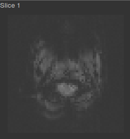
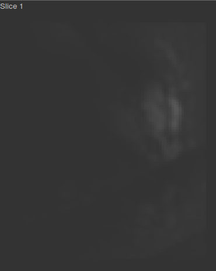
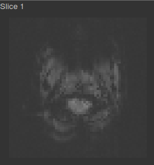
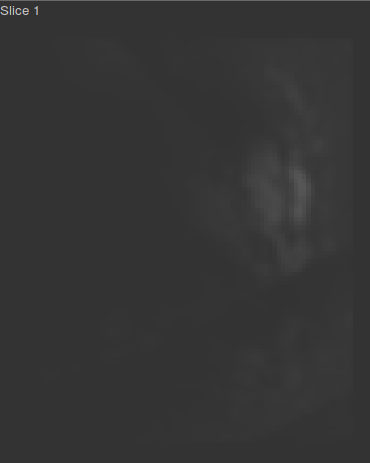
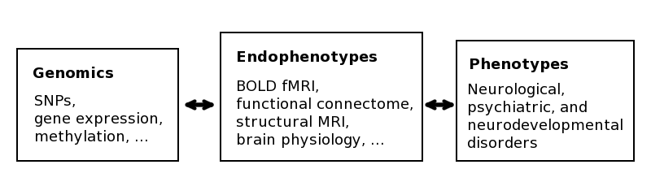
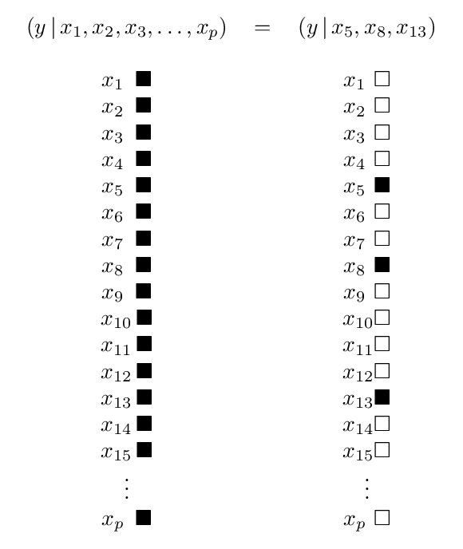
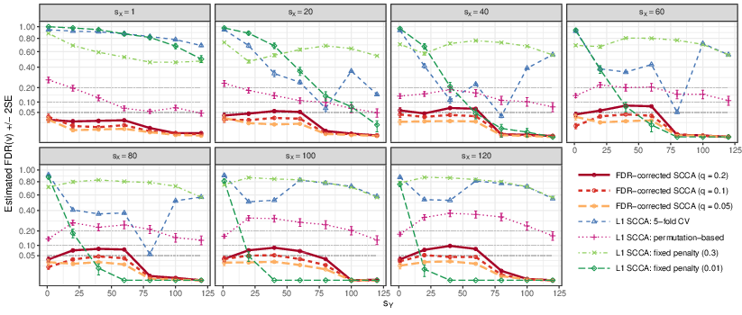
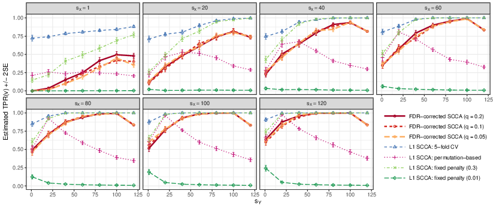
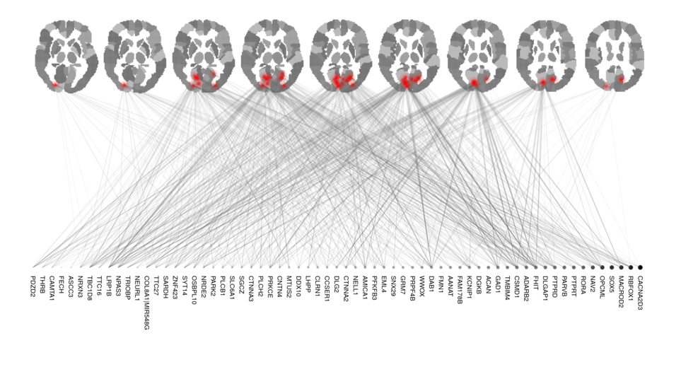

Regaining control of false findings in feature selection, classification, and prediction on neuroimaging and genomics data
Oral defense of a dissertation submitted to the Bioinnovation PhD Program of the School of Science and Engineering of Tulane University in partial fulfillment of the requirements for the PhD degree by
Alexej Gossmann
July 11, 2018
Precision Medicine
Inter-personal diversity in the patients' biology
⇾ "personalized" treatment plans
↑ Quality of healthcare
↓ Treatment time and cost
Precision Medicine
Made possible by:- Big data including genomics and neuroimaging.
- Computational methods including machine learning and modern statistics.
Source: Images by Thomas Shafee [CC BY 4.0] via Wikimedia Commons.
- Structural MRI: anatomical structure of the brain.
- Functional MRI: brain activity associated with blood flow related to energy use by brain cells across time.
 



A randomly chosen subject from the Philadelphia Neurodevelopmental Cohort:
- T1-weighted MRI before preprocessing ($192\times 256 \times 160$ voxels).
- n-back task BOLD fMRI (i.e., T2*-weighted) before preprocessing ($64\times 64\times 49$ voxels), and after preprocessing ($79\times 95\times 79$ voxels).
[230 time points]
Precision Med. & Mental Disorders
- Neuroimaging as an endophenotype.[1-2]
- Use of fMRI to aid diagnosis, or to monitor & guide drug treatment.[3-5]
[1]: Hashimoto et. al., 2015, [2]: Poline et. al., 2015, [3]: Weickert et al., 2004, [4]: Apud et al., 2007, [5]: Goldstein-Piekarski et al., 2016.
Models
Models
$$y = f\subscript{\boldsymbol{\theta}}(x\subscript{1}, x\subscript{2}, \ldots, x\subscript{p}) + \varepsilon,$$ where $x\subscript{1}, x\subscript{2}, \ldots, x\subscript{p}$ are predictor variables, $\varepsilon$ is random noise, $y$ is the phenotype, and $\boldsymbol{\theta}$ is a vector of parameters to be estimated.
Human DNA $\approx 3\cdot 10^9$ base pairs ⇝ vast majority not related to phenotype of interest ⇝ sparse models $$\Rightarrow y = f\subscript{\tilde{\boldsymbol{\theta}}}(x\subscript{a\subscript{1}}, x\subscript{a\subscript{2}}, \ldots, x\subscript{a\subscript{m}}) + \varepsilon,$$ where $\{a\subscript{1}, a\subscript{2}, \ldots, a\subscript{m}\} \subset \{1,2,\ldots,p\}$ is a small subset ($m \ll p$).
Sparse Models
The two-faced model selection problem
Prediction: Feature selection:
Find best predictions for $y$. Which $x\subscript{j}$ are predictive?
Two types of false findings
False positives. False discoveries.
Overfitting. Curse of dimensionality.
Aims
Establish guarantees on...
- false discoveries in feature selection,
- false predictions on new data (generalization)
...for types of methods commonly used in the analysis of genomic and neuroimaging data.
Resources and collaborators
- The Multiscale Bioimaging and Bioinformatics Laboratory (MBB) at Tulane University.
- Tulane Center for Bioinformatics and Genomics (CBG).
- FDA, Office of Science and Engineering, Division of Imaging, Diagnostics, and Software Reliability.
- Other: The Mind Research Network, University of Wrocław, Indiana University Bloomington, University of Tennessee Health Science Center.
Feature selection in genomics and neuroimaging
Multiple hypotheses testing
Feature selection as testing of hypotheses: $$H\subscript{i} : \beta\subscript{i} = 0, \quad i = 1,\ldots,p.$$
- $\beta\subscript{i} := $ effect of $i$th feature.
- $R := $ number of rejected hypotheses.
- $V := $ number of false rejections (i.e., Type I errors).
- Family-wise error rate: $\mathrm{FWER} = \mathbb{P}(V \geq 1)$.[1]
- False discovery rate: $\mathrm{FDR} = \mathbb{E}\left( \frac{V}{\min\{R, 1\}} \right)$.[2]
[1]: E.g., Bonferroni, Holm (1979), Hommel (1988).
[2]: E.g., Benjamini-Hochberg (1995), Benjamini-Yukutieli (2001).
Sparse regression
LASSO: $\hat{\boldsymbol{\beta}} = \arg\min\subscript{\mathbf{b}\in\mathbb{R}^p} \frac{1}{2} \lVert\mathbf{y} - X\mathbf{b}\rVert\subscript{2}^2 + \lambda\lVert\mathbf{b}\rVert\subscript{1}.$[1]
- $\mathbf{y} = f(X) + \boldsymbol{\varepsilon} \approx f(X) = X\boldsymbol{\beta} \approx X\hat{\boldsymbol{\beta}}$.
- Yields a sparse solution $\hat{\boldsymbol{\beta}}$.
- Computationally efficient (convex).
- Very useful in practice.
- Problem: how to do statistical inference on $\hat{\boldsymbol{\beta}}$?
- Problem: how sparse should $\hat{\boldsymbol{\beta}}$ be?
[1]: Tibshirani, JRSSB, 1996.
Sorted L-One Penalized Estimation[1]
$\hat{\boldsymbol{\beta}}\subscript{\mathrm{SLOPE}} = \mathrm{argmin}\subscript{\mathbf{b}\in\mathbb{R}^p} \frac{1}{2} \lVert \mathbf{y} - X\mathbf{b}\rVert\subscript{2}^2 + \sum\subscript{i=1}^p \lambda\subscript{i} |\mathbf{b}|\subscript{(i)},$
where $\lambda\subscript{1} \geq \lambda\subscript{2} \geq \ldots \geq \lambda\subscript{p} \geq 0$; and $|b|\subscript{(1)} \geq |b|\subscript{(2)} \geq \ldots \geq |b|\subscript{(p)}$ denotes the order statistic of the magnitudes of the vector $\mathbf{b}\in\mathbb{R}^p$.
Given $q\in(0,1)$, there is a procedure to choose $\boldsymbol{\lambda}$ s.t. $\mathrm{FDR}(\hat{\boldsymbol{\beta}}\subscript{\mathrm{SLOPE}}) \leq q$ is guaranteed. ...if the explanatory variables have very small pair-wise correlations. ← typically not the case in genomics.[2]
[1]: Bogdan et. al., Annals Appl Stat, 2015. [2]: Gossmann et. al., ACM BCB, 2015.
Group SLOPE Motivation
- Divide the data into groups by correlation. ← Often possible for biological data.
- Then select/drop entire groups rather than individual variables.
- Redefine FDR w.r.t. groups: gFDR.
Group SLOPE
- $\mathbf{y} = X\boldsymbol{\beta} + \boldsymbol{\varepsilon}$, $X\in\mathbb{R}^{n\times p}$, $\boldsymbol{\beta}\in\mathbb{R}^p$, $\boldsymbol{\varepsilon}\sim\mathrm{N}(0, \sigma\subscript{\varepsilon}^2 I)$.
- $\boldsymbol{\beta}$ divided into $J$ groups of sizes $p_1, p_2, \cdots, p_J$, i.e. $\boldsymbol{\beta} = (\boldsymbol{\beta}_1^T, \boldsymbol{\beta}_2^T, \ldots, \boldsymbol{\beta}_J^T)^T$ with $\boldsymbol{\beta}_i \in \mathbb{R}^{p_i}$.
$$\min\subscript{\mathbf{b}\in\mathbb{R}^p} \frac{1}{2} \left\lVert\mathbf{y} - X\mathbf{b}\right\rVert\subscript{2}^2 + \sum\subscript{i=1}^J \lambda\subscript{i} \sqrt{p\subscript{(i)}}\left\lVert X\subscript{(i)} \mathbf{b}\subscript{(i)}\right\rVert\subscript{2},$$ where $\sqrt{p\subscript{(1)}}\left\lVert X\subscript{(1)} \mathbf{b}\subscript{(1)} \right\rVert\subscript{2} \geq \sqrt{p\subscript{(2)}}\left\lVert X\subscript{(2)} \mathbf{b}\subscript{(2)} \right\rVert\subscript{2} \geq \ldots$
- Fast iterative shrinkage-thresholding algorithm (FISTA) — a proximal gradient method used in [1-3].
- Alternating direction method of multipliers (ADMM) — derived in the thesis.
[Figure 3.2 in the thesis]
[1]: Gossmann et. al., 2015. [2]: Brzyski, Gossmann, et. al., 2018. [3]: Gossmann et. al., 2017.
Group SLOPE - Theoretical guarantees
Given a user-specified $q \in (0, 1)$, we show how to choose $\boldsymbol{\lambda}$ such that $\mathrm{gFDR} \leq q$.[1-3]
Different approaches: theoretical for orthogonal designs[2-3], heuristic based on theory for general designs[1-2], Monte Carlo based for general designs[3].
Confirmed with extensive simulation studies on synthetic and real data.[1-3]
[1]: Gossmann et. al., 2015. [2]: Brzyski, Gossmann, et. al., 2018. [3]: Gossmann et. al., 2017.
Application - Framingham Cohort Analysis[1]
- SNP data for 8915 subjects.
- 1771 subjects have corresponding spine BMD measurements.
- The remaining ~7000 subjects used to group SNPs.
$X$ with dimensions $1771 \times 117933$, consisting of 6403 groups of average size 18.42 (median size 2).
[1]: Gossmann et. al., 2017.
- Performance of SLOPE on DNA seq data.[1]
- An alternative formulation of Group SLOPE.[1, 3]
- Theoretical gFDR control under orthogonal groups.[2-3]
- Error variance estimation: Scaled sparse linear regression vs. EigenPrism.
- Analysis of runtime on large DNA seq datasets.[3]
- Genomic data preprocessing.[3]
- Group SLOPE is asymptotically minimax w.r.t. estimation.[2]
[1]: Gossmann et. al., 2015. [2]: Brzyski, Gossmann, et. al., 2018. [3]: Gossmann et. al., 2017.
Canonical Correlation Analysis

Classical CCA [Hotelling, 1936]
Consider two matrices (i.e., datasets)
$X\in\mathbb{R}^{n\times p}$ and $Y\in\mathbb{R}^{n \times q}$ (with columns centered).
$$\mathrm{maximize}\subscript{u\in\mathbb{R}^p, v\in\mathbb{R}^q} \widehat{\mathrm{Cov}}(Xu, Yv) = \frac{1}{n} u^T X^T Y v,$$ $$\mathrm{subject\,to} \quad \widehat{\mathrm{Var}}(Xu) = 1, \widehat{\mathrm{Var}}(Yv) = 1.$$
The problem is degenerate if $n \leq \mathrm{max}\left( p, q \right)$.
+ Sparsity assumption on biological data
Sparse CCA[1-2]
$\mathrm{maximize}\subscript{\mathbf{u}\in\mathbb{R}^p, \mathbf{v}\in\mathbb{R}^q} \frac{1}{n} \mathbf{u}^T X^T Y \mathbf{v},$
subject to
$\lVert \mathbf{u} \rVert_2^2 \leq 1, \lVert \mathbf{v} \rVert_2^2 \leq 1, \lVert \mathbf{u} \rVert_1 \leq c_1, \lVert \mathbf{v} \rVert_1 \leq c_2$.
- Unique solution even when $p_X, p_Y \gg n$.
- Selection of the sparsity parameters remains a challenging problem.
[1]: Witten et. al., 2009, [2]: Parkhomenko et. al., 2009.
Sparse CCA
Select sparsity parameters in a data-driven fashion, such that FDR is controlled.
Defining FDR for sparse CCA
- Adapt the widely-used FDR concept from multiple hypotheses testing to CCA.[1]
The expected proportion of “discoveries” that are false.
- Consider FDR in $\mathbf{u}$ and in $\mathbf{v}$ separately.
[1]: Benjamini & Hochberg, JRSSB, 1995.
Defining FDR for sparse CCA
The coefficient estimate $\hat{u}_i \neq 0$ represents a false discovery of the $i$th feature of $X$, if $u_i$ doesn't affect the value of $\mathrm{Cov}(\mathbf{x} \cdot \mathbf{u}, \mathbf{y} \cdot \mathbf{v})$, or equivalently if $$\hat{u}_i \neq 0 \quad \text{and} \quad \mathrm{E}(X^T Y \mathbf{v})_i = 0.$$
Defining FDR for sparse CCA
- $\mathrm{R}\subscript{\hat{\mathbf{u}}} =$ the number of non-zero elements in $\hat{\mathbf{u}}$,
- $\mathrm{V}\subscript{\hat{\mathbf{u}}} =$ the number of false discoveries.
Define
$\mathrm{FDR}(\hat{\mathbf{u}}) := \mathbb{E}\left( \frac{\mathrm{V}\subscript{\hat{\mathbf{u}}}}{\max\left\{ \mathrm{R}\subscript{\hat{\mathbf{u}}}, 1 \right\}} \right).$
Defining gFDR for sparse CCA
Analogously we define the group-wise false discovery rate (gFDR).
- $\mathrm{Rg}\subscript{\hat{\mathbf{u}}} =$ the number of non-zero groups of elements in $\hat{\mathbf{u}}$,
- $\mathrm{Vg}\subscript{\hat{\mathbf{u}}} =$ the number of falsely discovered groups.
Define
$\mathrm{gFDR}(\hat{\mathbf{u}}) := \mathbb{E}\left( \frac{\mathrm{Vg}\subscript{\hat{\mathbf{u}}}}{\max\left\{ \mathrm{Rg}\subscript{\hat{\mathbf{u}}}, 1 \right\}} \right).$
SlopeCCA and gSlopeCCA
slopeCCA:
$\mathrm{minimize}\subscript{\fatu\in\R^p, \fatv\in\R^q}\, \left\{ -\fatu^T X^T Y \fatv + \sqrt{n} J\subscript{\fatlambda^u}(\fatu) + \sqrt{n} J\subscript{\fatlambda^v}(\fatv) \right\}$,
subject to $\lVert\fatu\rVert\subscript{2}^2 \leq 1, \lVert\fatv\rVert\subscript{2}^2 \leq 1$.
gslopeCCA:
$\mathrm{minimize}\subscript{\fatu\in\R^p, \fatv\in\R^q} \left\{ -\fatu^T X^T Y \fatv + \sqrt{n} J\subscript{\fatlambda^u}\left( \left( \lVert \fatu\subscript{1} \rVert\subscript{2}, \dots\right)^T \right) + \sqrt{n} J\subscript{\fatlambda^v}\left( \left( \lVert \fatv\subscript{1} \rVert\subscript{2}, \dots \right)^T \right) \right\}$, subject to $\lVert\fatu\rVert\subscript{2}^2 \leq 1, \lVert\fatv\rVert\subscript{2}^2 \leq 1$.
Where $J\subscript{\fatlambda}(\fatu) = \Sigma\subscript{i=1}^p \lambda\subscript{i} |u|\subscript{(i)}$ is the Sorted L1 Norm.
SlopeCCA and gslopeCCA - computational methods
Both are biconvex optimization problems.
Alternating optimization algorithms are guaranteed to converge.
SlopeCCA and gSlopeCCA - theoretical guarantees
Asymptotic (i.e., as $n\to\infty$) FDR and gFDR guarantees if $Cov(X)$ and $Cov(Y)$ are diagonal or block-diagonal.
($Cov(X, Y)$ can be of arbitrary shape)
Simulation studies: FDR and gFDR of slopeCCA, gslopeCCA, and $\ell_1$-penalized CCA solutions; $n = 200, 1000, 5000, 10000$ and $p_X = p_Y = 300$; 11 evenly spaced sparsity levels between 0 (i.e., $X$ is uncorrelated with $Y$) and 1 (i.e., every feature of $X$ is correlated to some feature of $Y$, and vice versa); 500 independent simulation runs; dashed line represents theoretical bounds for slopeCCA and gslopeCCA.
[Figure 4.1 in the thesis]
Canonical variates estimated by gslopeCCA on methylation and mRNA data from TCGA ($n = 1109$, $p_X = 24981$, $p_Y = 20255$).
Observations are colored according to cancer type, revealing clear differences.
[Figure 4.2 in the thesis]
SlopeCCA and gslopeCCA
Some further topics covered in the thesis:
- Optimization algorithms.
- Asymptotic normality results.
- Genomic data pre-processing.
FDR-corrected sparse CCA
FDR-corrected sparse CCA
Motivation: The assumption of slopeCCA and gslopeCCA that $Cov(X)$ and $Cov(Y)$ are diagonal or block-diagonal is too restrictive in many cases.
FDR-corrected sparse CCA
A split-sample, two-step procedure:[1]
- Split the data in two parts.
- Using the first subsample: obtain initial estimates $\hat{\fatu}^{(0)}$ and $\hat{\fatv}^{(0)}$ using conventional sparse CCA.
- Using the second subsample: test hypotheses of the form, $$\mathrm{H}^{(u)}\subscript{i} : \mathrm{E}\left(X^T Y \mathbf{v}\right)\subscript{i} = 0, \quad \mathrm{H}^{(v)}\subscript{j} : \mathrm{E}\left(Y^T X \mathbf{u}\right)\subscript{j} = 0,$$ and adjust for multiple comparisons to control FDR.
[1]: Gossmann et. al., IEEE TMI, 2018.
FDR-corrected sparse CCA - Theoretical FDR Guarantees
- Asymptotic theory allows us to approximate the distributions of $X^T Y \hat{\fatv}^{(0)}$ and $Y^T X \hat{\fatu}^{(0)}$.
- We can use the Benjamini-Hochberg procedure to control the FDR.
FDR control confirmed with extensive simulation studies on synthetic and real data.[1]
[1]: Gossmann et. al., IEEE TMI, 2018.
Simulation Studies
$X, Y \in \R^{600 \times 1500}$. FDR is controlled regardless of the sparsity of the true solution.
Simulation Studies
True positive rate is on par with competing methods.
FDR-corrected SCCA - Application
- Diversity in brain activity and brain connectivity in children and adolescents.
- What are the driver genes?
- Relationship to neurodevelopmental and psychiatric disorders.
Dataset
The Philadelphia Neurodevelopmental Cohort (PNC) is a large-scale collaborative study between the Brain Behaviour Laboratory at the University of Pennsylvania and the Children's Hospital of Philadelphia. It contains a fractal $n$-back fMRI task, an emotion identification fMRI task, SNP arrays, and questionnaire data for over 900 adolescents.
Objective
Use sparse CCA to identify the relationships between brain activity, brain connectivity, and genomics.
Application 1: n-back fMRI vs. SNPs
Selection from $85796$ brain voxels and $60372$ genomic features. [Figure 5.5 in the thesis]
Results validation - n-back fMRI vs. SNPs
- Similar brain regions have been found in other fMRI studies of working memory.
- At least 34 out of the 65 identified genes have been previously associated with various aspects of human cognitive function.
Application 2: Functional connectivity (FC) vs. SNPs
- Emotion identification task fMRI data transformed to FC measures.
- FDR-corrected sparse CCA solution includes 129 genomic features and 107 FC features.
FC vs. SNPs - Top 10 selected genes
| Gene | Previously studies in association with... |
|---|---|
| DAB1 | Autism, schizophrenia, brain development |
| NAV2 | Brain development |
| WWOX | Cognitive ability, brain development |
| CNTNAP2 | Autism, brain connectivity, brain development, schizophrenia, major depression, cognitive ability (linguistic processing) |
| NELL1 | Brain development |
| PTPRT | Brain development |
| FHIT | Cognitive ability, autism, ADHD |
| MACROD2 | Autism |
| LRP1B | Cognitive function |
| DGKB | Brain development, bipolar disorder |
(for detail see [Gossmann et. al., TMI, 2018])
FDR-corrected sparse CCA
Some further topics:
- Further simulation studies with other underlying covariance structures.[1]
- Further simulation studies on real DNA sequence data.[1]
- Preprocessing steps for the genomic and the fMRI data.[1]
- Exploratory analysis, and analysis of confounding factors in the data.[1]
[1]: Gossmann et. al., IEEE TMI, 2018.
Another type of false findings
Feature selection with FDR control.
Features can be used to fit a predictive model.
Danger of over-fitting to the local noise in the given dataset, resulting in false predictions on new data.
What to do?
In Machine Learning practice, generally, usage of two independent datasets — "training" and "test" data.
Training data: exploratory analysis, model fitting, parameter tuning, comparison of different machine learning algorithms, feature selection, etc.
$\Longrightarrow$ Adaptive machine learning, risk of overfitting.
Test data: Performance evaluation after the trained machine learning algorithm has been "frozen".
$\Longrightarrow$ Accurate performance measures of the final model, if the test data is used only once.
Idea
Can we obfuscate the test data to avoid overfitting?
Differential privacy.[1]
Promising simulation results.[2-3]
[1]: Dwork, McSherry, Nissim, Smith, 2006.
[2]: Dwork et. al., Science, 2015.
[3]: Gossmann et. al., SPIE 2018.
Differential privacy (Dwork, McSherry, Nissim, Smith, 2006)
- A mathematically rigorous definition of data privacy. $$P[\mathcal{M}(D) \in S] \leq e^\varepsilon P[\mathcal{M}(D^\prime) \in S] + \delta.$$
- Idea: An individual data point has little impact on the value reported by a DP mechanism.
- Purpose: An adversary cannot learn an individual data point from querying a DP mechanism.
- Properties: DP is preserved under post-processing and under adaptive composition.
Thresholdout + AUC =
Thresholdout$_{\mathrm{AUC}}$[2] combines the Thresholdout technique[1] with AUC as the reported performance metric on test data.
[1]: Dwork et. al., Science, 2015.
[2]: Gossmann et. al., SPIE 2018.
Thresholdout$_{\mathrm{AUC}}$ — rough summary
If $\lvert \mathrm{AUC}_{\mathrm{training}}(\phi) - \mathrm{AUC}_{\mathrm{test}}(\phi) \rvert > \tilde{T}$:
output $\mathrm{AUC}_{\mathrm{test}}(\phi) +$ "a little noise"
Else:
output $\mathrm{AUC}_{\mathrm{training}}(\phi)$
ThesholdoutAUC
Some further topics covered in the thesis:
- AUC — discussion and benefits.
- Complete statement of the ThesholdoutAUC procedure.
- Data generation.
- Simulation procedure detail.
- Choice of the tuning parameters within ThesholdoutAUC.
- Analysis of the AUC estimation error.
[1]: Gossmann et. al., SPIE Medical Imaging 2018.
Parts of this work appear in:
- G.A., Cao, S., & Wang, Y.-P. In proceedings of ACM BCB '15. 2015.
- G.A., Cao, S., Brzyski, D., Zhao, L. J., Deng, H. W., & Wang, Y. P. IEEE/ACM TCBB. 2017.
- Brzyski, D., G.A., Su, W., & Bogdan, M. JASA. 2018.
- G.A., Zille, P., Calhoun, V., & Wang, Y.-P. IEEE TMI. 2018.
- G.A., Pezeshk, A., & Sahiner, B. In proceedings of SPIE Medical Imaging '18. 2018.